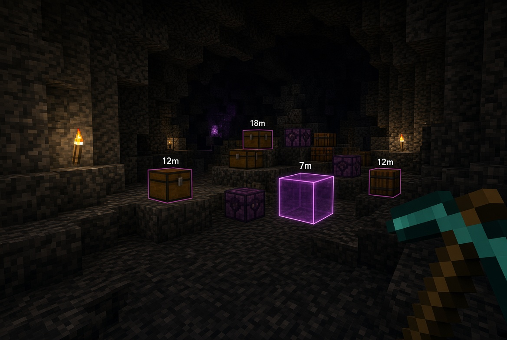

Locate player stashes
in real time
Client-side utility that detects and highlights nearby containers with valuable items. Designed for large public servers.
 Download
Download

Features
Core functionality of the mod
Stash detection
Scans loaded chunks for chests, barrels, shulker boxes and ender chests. Marks containers that hold high-value items.
Value scoring
Assigns a score to every container based on its contents. Netherite, enchanted gear and totems rank highest. Configurable thresholds.
ESP overlay
Optional through-wall rendering with adjustable opacity, color and maximum range. Can be limited to outlines only.
Persistent waypoints
Detected locations are stored locally. Coordinates remain available after chunks unload so you can return later.
Filters
Ignore empty containers, your own bases, or storage that has not changed recently. Focus only on relevant finds.
Client-side only
No additional packets are sent to the server. The mod operates entirely on data already present on the client.
How it works
Technical overview
Chunk inspection
When a chunk is loaded, the mod iterates over all block entities and identifies storage containers. Inventory contents are read when the data is already available on the client.
Scoring
Each item is given a weight. The sum determines whether the container is highlighted. Thresholds and item weights can be changed in the configuration file.
Rendering
Qualified containers are drawn as outlines or filled boxes. Distance labels and optional waypoints provide additional context without cluttering the view.
Local storage
Coordinates of interesting finds are written to a local file. The list persists across sessions and can be cleared manually.
Client-side radar and ESP features violate the rules of most public servers, including DonutSMP. This mod is intended for private servers, singleplayer, or environments that explicitly permit utility clients. Use is at your own risk.